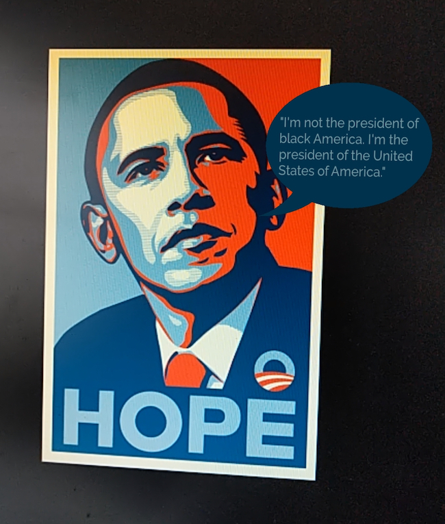
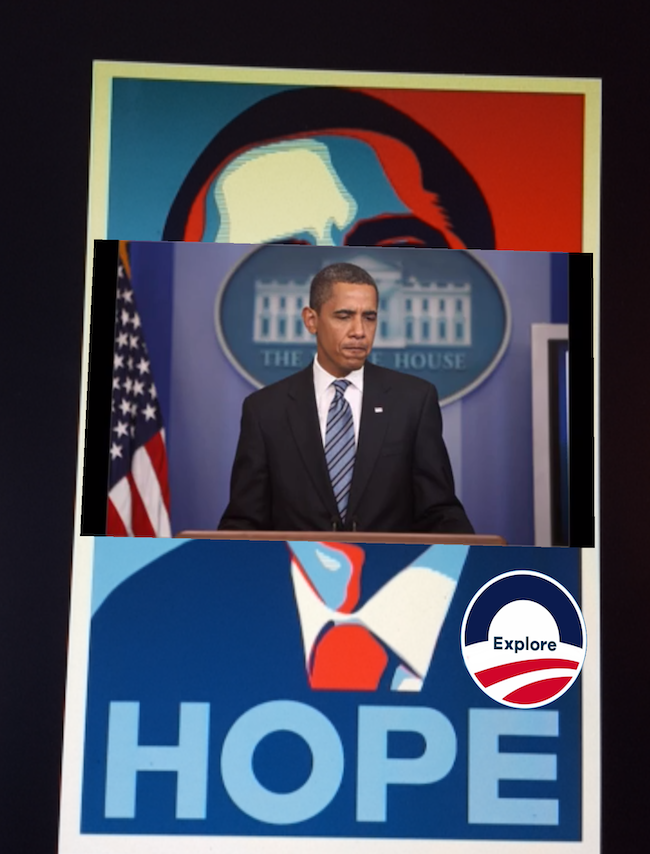
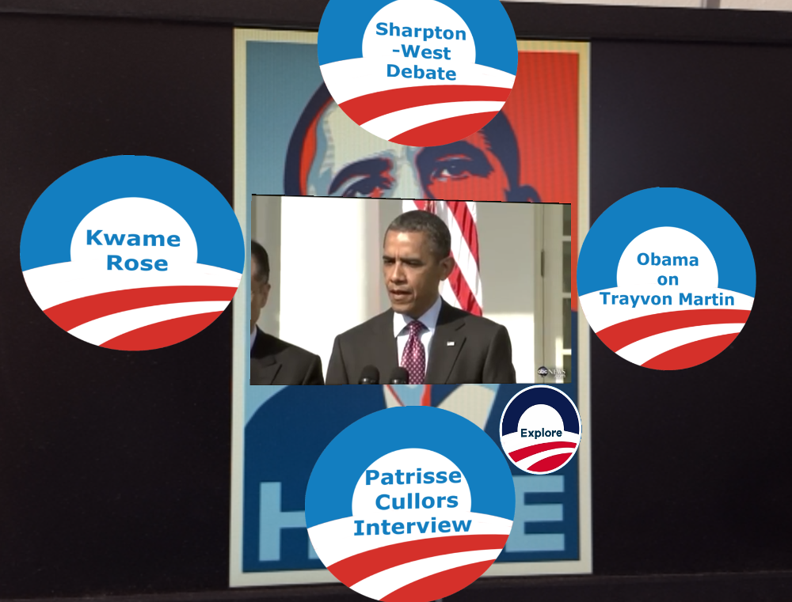

Producing Counterpublic Remixes
Special instructions for viewing this section:
Ensure that the volume on your mobile device is turned up.
Open the “Remixing Hope” application and use the “Obama Hope Remix” button to access augmented reality content for the corresponding images in this section.
Digital activists have already started to experiment with the potential of AR technologies to remix visual culture. In 2011, for instance, a group of digital artists collaborated to create a counterpublic remix of Times Square in New York City. The project, known as the AR/AD Takeover, was a smartphone application that allowed people to superimpose digital messages over physical advertisements (Tinnell 76). One augmentation remixed an advertisement so that it simply displayed the word “Breathe,” thereby repurposing the commodification of public space for a public service message. As the creators explain, this enactment of counterpublic remix helps us imagine how AR might be used to “transform, filter, and democratize the messaging in public space” (“AR AD Takeover”). More recently, in early 2015, a group of undergraduate students at the University of Pennsylvania created the “Brandkiller” AR application. Designed to be used with an optical display such as Google Glass, the application blocks any physical advertisements in the viewer’s line of sight. In doing so, this application, like the AR/AD Takeover, demonstrates how mobile AR can revolutionize how counterpublic discourses circulate in relation to visual culture.
In “Composition and the Circulation of Writing,” John Trimbur claims that delivery is an essential component of public discourse. Trimbur argues that we should stop thinking about delivery as a mere “technical aspect of public discourse” and more as “a democratic aspiration to devise delivery systems that circulate ideas, information, opinions, and knowledge and thereby expand the public forums in which people can deliberate on the issues of the day” (190). Augmenting public images with mobile AR technologies offers a new kind of “delivery system” for circulating counternarratives to the isotropic rhetorics that images such as Obama Hope can perpetuate. As John Tinnell points out, mobile AR as a platform for counterpublic rhetorics is not likely to catch on as a mass medium until AR creators “become more attentive to matters of content creation” (70). In other words, mobile device users are not likely to engage with AR as a medium unless there exist compelling AR experiences to engage with in the first place. Counterpublic remixes offer a compelling experience capable of not only intervening into isotropic narratives perpetuated through the circulation of public images but potentially catalyzing the production of new genres of digital writing that galvanize counterpublic action.
Drawing on the counterpublic rhetorics that circulated in response to Obama’s approach to race relations throughout his presidency, the remix in this section overlays multimedia AR content onto the original Obama Hope poster. In doing so, I hope to recirculate texts created by black writers and activists that are capable of creating a more complex portrait of the influence that the Obama presidency had on public perceptions of race and American politics. In terms of design and production, this counterpublic remix deploys the remix strategies introduced in the first section with the following design phases outlined in the Visualizing Information for Advocacy Handbook (VIFA): 1) Get the Idea, 2) Get the Picture, and 3) Get the Details. Created by a team of designers and activists, VIFA is a free resource that provides design strategies for promoting advocacy initiatives. By deploying remix strategies in subsequent phases, mobile writers can leverage the multimodal affordances of AR to easily design compelling counterpublic remixes with potential to spark other participatory recombinations and galvanize counterpublic action.
The first phase in producing counterpublic remixes— “Get the Idea”—entails capturing the audience’s attention and communicating a general stance on the issue at hand—a design task that can be enhanced by making use of the “reappropriation” category of remix as well as the visual design strategies of juxtaposition and contradiction. At this stage, the AR overlays should engage in a subtle rhetorical interplay with the visual aesthetics of the target image so as to establish a straightforward “critique of the original text” (Edwards 48).
In relation to my own counterpublic remix, such practices and strategies are especially important for highlighting the primary point of tension between the original image and the counterpublic message of the overlay. As Scott H. Church points out, the rhetorical practices of remix—sampling, cutting, combining, etc.—extend as far back as the Greek rhetorician Isocrates and his pedagogical practice of “imitatio.” Imitatio was the practice of “imitating” the speeches of famous orators in order to learn and adapt their rhetorical techniques to present day situations. However, Church is right to point out that, for Isocrates, imitatio was not just rote copying but rather a “productive and inventive process” that allows rhetors to develop strategies of their own “through interpretation, variation, creativity, and novelty” (44). Similarly, in designing overlays for the “Get the Idea” stage of AR counter-remixes, it important to consider how meaning is created not by merely imitating but by reappropriating and responding to the rhetoric of the target image.
In my counterpublic remix, I thus try to draw the audience’s attention to the racial politics of Obama’s presidency by presenting one of the core arguments levelled by Obama’s detractors: that he did not do enough in his first term as president to promote policies designed specifically to help black Americans. Indeed, in a special journal issue on Obama’s presidency in the Howard Journal of Communications, Chuka Onwumechili notes a prominent theme in popular and scholarly conversations that Obama “may not have done enough on Black issues”(1). Even more forcefully, in a widely circulated opinion piece for The Atlantic published in 2012, Ta-Nehisi Coates described Obama as “a conservative revolutionary” who “since taking office…has virtually ignored race.” Coates mentions that in those moments when Obama did address race, it was often in a language of “black self-hectoring” intended more to highlight “the perceived failings of black culture” than the racial injustices embedded within American society.
As his detractors note, Obama’s efforts to promote bipartisan policy initiatives—from health care to environmental sustainability—often resulted in a strategic deflection of race that may have contributed to the perpetuation of the idea that we are entering a post-racial phase of American history (Dyson, 47). In his book The Black Presidency: Barack Obama and the Politics of Race in America, Michael Eric Dyson writes that “we as a nation project our expectations and frustrations [about race] on Obama’s presidency” (xi). As Dyson points out, for many white Americans, the “expectations” of Obama’s election as the first black president was that racism had officially ended (and so too should any discussions about race and racism). This false expectation further amplified the “frustrations” of many black Americans for whom the very act of “talking about racism” continued to become “just as bad as racism itself” (48).
In an interview with Black Enterprise Magazine, Obama responded to his critics, saying “I’m not the president of black America. I’m the president of the United States of America.” For many of Obama’s critics, this quote effectively crystallized Obama’s approach to race throughout his presidency and served as further evidence of his unwillingness to pursue policies and rhetorics that might appear to favor black Americans. The initial phase of the augmentation begins by overlaying this quote as a speech bubble next to Obama, thereby introducing the overall “idea” that the counterpublic remix will be exploring further within the next two phases.
Figure 7. "Get the Idea"
The next phase, “Get the Picture,” entails providing more in-depth information to the user by employing and combining various multimodal genres. According to VIFA, this phase should present a more cohesive narrative to “help people to grasp [the] problem by understanding its context or scale, how it came about, how it compares to other issues, or how urgent it is” (74). Overall, the purpose of this phase is to provide enough background information that the audience will be enticed “to explore [the] issues further.” Building from the tension created in the first phase, this second phase transitions to a short video that provides historical context to perceptions of Obama’s approach to racial issues throughout his presidency. Moving from Obama’s 2008 election to his post-presidential legacy, the video does not aim to be exhaustive but rather seeks to provide more detailed information so that the user can become familiar with and informed about the varied sides of the debate. This video helps to contextualize the issue and the historical circumstances that led up to the quote from Obama that was introduced in the first phase. As such, this phase also engages in a form of “genre play” by working “within and against socially constituted ways” of accessing and viewing online video content (Edwards 50). Although the video in this example is relatively simple from a technical standpoint, more robust AR overlay videos or 3D animations might interact more directly with the design elements of the target image, thereby generating entirely new genres of digital mobile remix.
Figure 8. "Get the Picture"
The final phase of the augmentation, “Get the Details,” entails offering the user an entry point into primary texts, digital resources, and/or online communities connected to the issue at hand. Unlike the previous phase, which offered a linear narrative of the events leading up to the fraught relationship between Obama and prominent black writers and activists, this phase merely assembles primary source materials for the user to navigate on their own. As VIFA describes this phase, “[t]he art in getting the details is to allow audiences to explore the evidence for themselves to find the stories that mean something to them” (96). As such, this phase of the augmentation combines well with the “assemblage” category of remix, which works by “gathering, repurposing, and deploying a combination of already-existing texts” (Edwards 47). By providing the user with direct access to these digital materials, they can generate their own connections and perspectives on complex social issues.
In this phase, I overlaid Obama Hope with accessible resources that would nuance the user’s understanding of the effects of Obama’s presidency on racial issues and public conversations about race. In doing so, I splinter this issue into the network of public texts that through it is constituted. As Gries demonstrates in Still Life with Rhetoric, the circulation of the Obama Hope image “spread desires for progress, hope, and change” (41). However, as the writers and activists in this third phase point out, it is vital that Obama’s election not be read as a substitute for continued efforts at real and lasting “progress, hope, and change.” Thus, this final phase of the augmentation works to fragment the narrative of hope embedded in the target image into distributed contemporary conversations about race.
Figure 9. "Get the Details"
To accomplish this goal, I created four digital buttons that, when tapped, trigger different critiques of Obama’s approach to race relations that have been launched by various figures throughout Obama’s administration. The button “Sharpton-West Debate” links to an Obama-era MSNBC debate between Al Sharpton and Cornel West. Here, Cornel West argues that African-American communities’ hesitance to criticize Obama is being appropriated by “Wall Street oligarchs” who use the president as a “black mascot” to advocate for their own corporate interests. Al Sharpton responds that critiques like West’s place an unfair blame on the president for not resolving centuries-long issues of systemic racism. The debate that ensues between Sharpton and West was indicative of a burgeoning divide over perceptions of Obama’s presidency within various African-American communities.
Moving counter-clockwise, the next button triggers an interview with Kwame Rose, a leader within the Black Livers Matter movement. In the interview, Rose outlines his frustration with the Obama administration, stating that he doesn’t believe Obama “has done enough for black people.” Rose also goes on to describe the Obama administration’s lack of support for the Black Lives Matter movement. The third button triggers an interview with Patrisse Cullors, one of the co-founders of Black Lives Matter, where she describes how Obama’s election negatively impacted public discourse, saying that people no longer feel the need to “have honest conversations about race” now that “we had overcome” the racial barriers of the past by electing a black president. Together, these two interviews reveal the frustration that many Black Lives Matter activists feel towards Obama’s approach to race relations more generally and to the BLM movement specifically.
The final button, “Ta-Nehisi Coates links to an article by Ta-Nehisi Coates that reflects on Obama’s racial legacy in the wake of a Donald Trump presidency. In the article, Coates describes how Obama’s resistance to pursuing race-based policies reflected a larger ideology within liberal politics that remains wedded to the idea that we should focus less on issues of race and more on general “equality for all.” Of course, as Coates writes, the rising tide of far-right, white nationalist sentiment throughout the country is now making it all too clear that “issues of race” should not be thought of as minor elements within the pursuit of a more just and equitable society. Rather, matters of race are integral to the function of a society at a systemic level, and to ignore them in favor of “equality of all” is to perpetuate the same injustices such generic policies seek to mitigate.
Figure 10. To access the counterpublic remix in full, open the “Remixing Hope” app and scan the Obama Hope image above.
This overlay sequence presented the potential of mobile AR technologies to remix physical images into a delivery platform for counterpublic remixes. By combining remix practices of assemblage, reappropriation, and genre play, AR remixes can potentially foster more engaged, informed, and participatory encounters with popular public images. To harness such potential, of course, this counterpublic remix must be shared. The final phase of creating counterpublic remixes thus entails redistribution.
Because AR is such a new medium, many mobile device users may not even be aware when an image has been augmented with a digital counterpublic remix. For instance, the work it takes to download a third-party mobile application, search for a specific channel, and then scan the correct target image(s) may discourage some from even engaging with AR in the first place. To redistribute a simple counterpublic remix through vision-based AR with existing mobile technologies thus requires one to either 1) create a companion website (e.g. this chapter) with downloadable target images and instructions for accessing the remix through a third-party application, or 2) creating a photo or video documentation of the AR experience, which can then be circulated and accessed on social media websites and video platforms. The counterpublic remix in this final section models a combination of these two approaches. However, as mobile AR technologies become more advanced and integrated into the essential hardware and software of mobile devices, users may be able to set automatic push-notifications alerting them to the availability of counterpublic remixes that have been created for nearby physical images, such as the Obama Hope poster. Through this, mobile writers can leverage the existing physical delivery network of print images as platforms for the redistribution of digital counterpublic remixes. As Michael Warner reminds us, publics are constituted through “texts and their circulation” (413). Thus, by overlaying AR multimedia content that resists the isotropic narratives of widely circulated public images, counterpublic remixes can activate more informed and engaged public audiences and potentially serve as a galvanizing rhetorical force for counterpublic action.
Next Section